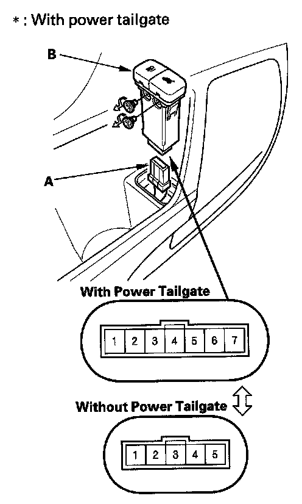

Fuel Door Switch: Service and Repair
Fuel Fill Door Opener Switch Test/ReplacementNOTE: Before testing, check the B-CAN System Diagnosis Test Mode A.
1. Remove the driver's door panel.

2. Disconnect the 5P (or 7P)* connector (A) from the fuel fill door opener switch (B).
3. Check for continuity between the No. 1 and No. 2 terminals.
- There should be continuity with the switch pressed.
- There should be no continuity with the switch released.
4. If the continuity is not as specified, replace the switch.